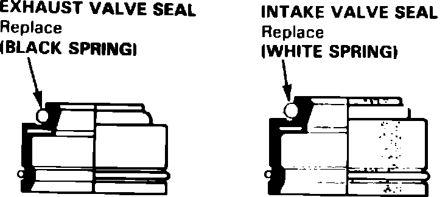

Valve Guide Seal: Service and Repair
Fig. 25 Valve seal identification:

1. Remove valve cover, then the bearing cap bolts. Loosen bearing cap bolts in a criss-cross pattern, two turns at a time to prevent damaging rocker arms or valves.
2. Compress valve springs using a suitable tool, then remove spring keepers and springs. With piston at TDC, insert a spark plug air hold fitting to hold valves closed and allow removal of the keepers.
3. Remove valve seals, Fig. 25.
4. Reverse procedure to install, noting the following:
a. Lubricate valve stems prior to spring installation.
b. Position valve springs with painted portion or closely wound coils toward cylinder head.
c. With springs installed, lightly tap end of each valve stem several times to seat valves and keepers.